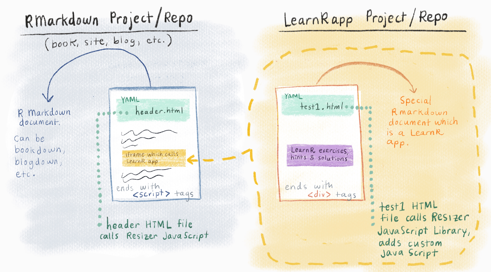

In this post I’m going to show you how you put a LearnR tutorial window into your R Markdown website. I haven’t outright tested this with bookdown, blogdown, or Distill, but it should work the same way for those types of sites too. This is an early draft to share this so that it can be out in the world! A better-illustrated version of this blog post is in the works.
If you’re unfamiliar with the LearnR package, it allows you to create special R Markdown documents that use Shiny to create interactive tutorials. The feature of LearnR tutorials that I like the most is that you can create small, compact R consoles with pre-loaded code, helpful hints, solutions, and instructions for others to use. Normally, LearnR tutorials exist as their own entities, living only within a package that you build or on a Shiny app URL that you send to someone. But this blog post will show you how to insert them into other Rmarkdown-based documents, like Russian nesting dolls.
When Hasse and I were working on our giraffe project, we wanted to figure out a way to embed these LearnR windows into our site. And in this post, I show you how to carry this out in your own existing R Markdown website.
The main thing this blog contributes is a bit of JavaScript magic that will make the iframe with your LearnR window appropriately resize when a user creates new plots (stretch downward), or checks solutions (make room at top), etc.
LearnR apps need to be hosted on the Shiny server. There are limits to the number of apps and simultaneous users you can have with the free tier of a Shiny account.
I assume you already:
You are going to end up with two distinct Rstudio projects, and two distinct Github repositories (repos). Each repo will contain one RMarkdown file, and a helper HTML file. Your RMarkdown file will use its YAML header to call (activate) the HTML file, which contains the JavaScript magic. To get a visual picture of where we will end up, think of two Russian nesting dolls that talk to each other.

While it may feel unnatural not to have everything in a single RStudio project and a corresponding single Github repo, this works best. On the plus side, you can add multiple learnr apps to your LearnR app repo, and use them repeatedly (as a sort of library of mini LearnR apps) in any of your future RMarkdown projects. There are two major steps:
You will create an independent LearnR app (called ‘learnr_app’) in its own RStudio project and corresponding Github repository (it may help to call this project and repo ‘learnr_apps’ in case you add more apps in the future).
You will publish it with a Shiny account (you will need to create a free Shiny account if you don’t already have one.) This will create a URL where it lives, which you will need later so that your iframe in your Rmarkdown document can call this app. You will need to leave this window open for later, or copy and save the published URL for later.
In the YAML header of the learnr_app, you will include a call to an HTML file, called ‘test1’ in the in_header: option of your LearnR .Rmd.
You will create this HTML file called ‘test1’, which will include some out-of-the-box JavaScript and some homemade JavaScript we’ll write ourselves.
At the very end of the body of your LearnR app, you will include one line of <div> tags.
Diving right in, let’s first create a LearnR app
Create a new RStudio project named ‘learnr_apps’.
Create a corresponding repo on your Github page, and make the initial commit to ‘learnr_apps’ and push it to Github.
Return to the ‘learnr_apps’ Project in RStudio. Make sure you have installed the learnr package. In your new project, create a new LearnR document by going to File > New File > R Markdown > From Template > Interactive Tutorial. Save this as ‘learnr_app1.Rmd’.
You will get a pre-populated LearnR .Rmd document. We’ll start by keeping the YAML front matter, the setup code chunk, and one of the regular LearnR code chunks (containing exercise = TRUE)—and now delete everything else. We can only create one compact LearnR window per LearnR .Rmd, so this is why we are only keeping a single exercise chunk in this document.
You can populate your exercise code chunk with whatever you’d like. (It will get fussy if you leave it blank, so I suggest at least including commented instructions). See the LearnR documentation for ideas of what is possible. Name the chunk something like ‘exercise1’.
To test the capabilities for resizing for hints and solutions, include a hint or a solution chunk also. These should not include exercise=TRUE, and should be named something like exercise1-hint or exercise1-solution depending on which they are. Follow the instructions in the LearnR documentation.
Save this file as ‘learnr_app1.Rmd’, and leave it open for later.
Now we’ll create the bits that will make it possible to “measure” how tall our LearnR content is. We first have to create an HTML file that will house the JavaScript that allows us to do the measuring.
Still in the ‘learnr_apps’ Project in RStudio, create an HTML file. Go to File > New File > Text File. Save this file as test1.html (you can name it something else).
Within this file, you’ll paste the following:
<script src="https://cdnjs.cloudflare.com/ajax/libs/iframe-resizer/3.5.16/iframeResizer.contentWindow.min.js" type="text/javascript"></script>The code above is a link that will bring in a special JavaScript library called an iFrame Resizer. This is an out-of-the-box library that will detect any live change in the height of the LearnR content. This is the first piece of JavaScript we need.
Add one blank line after the previous pasted chunk, and now paste in the following script tags to the HTML file, underneath the previous code you added. This is the homemade JavaScript, and it will let the iFrame resize even when the LearnR window produces content that spills outside of the iframe’s bounds (e.g. when a Solutions tab is opened up).
<script type="text/javascript">
// Once page is loaded, override and disable popover "scroll into view"
$(document).ready(function() {
window.tutorial.scrollIntoView = function() {}
})
// Add padding to LearnR body when popover shown
$(document).on("shown.bs.popover", function() {
var popoverHeight = document.querySelector(".popover").offsetHeight
document.body.style.paddingTop = popoverHeight + 10 + "px"
})
// Set padding to 0 when popover hidden
$(document).on("hide.bs.popover", function() {
var popoverHeight = document.querySelector(".popover").offsetHeight
document.body.style.paddingTop = "0px"
})
</script>This code above basically goes a bit above and beyond what the iFrameResizer will do. This code will check whether or not a “popover” is open in the LearnR content. Popovers include things like the hints or solution pop-ups that appears when a learner clicks on the hints or solutions button of the LearnR windows. The typical CSS for these popovers has been built into LearnR in such a way that the iFrameResizer doesn’t detect it, and the result is that popovers would get cut off in your iframe. This homemade JavaScript will measure the popover’s height plus 10px of extra wiggle room, and add that to what the iFrameResizer has detected.
The other bit of homemade JavaScript here also makes sure that we override some default “scroll into view” behavior that would otherwise make your page scroll the resized window to the top of the screen. We override this because it’s visually jarring when this happens.
We’re done with the HTML file. Go ahead and save this as test1.html, and close the file. Now, still in the ‘learnr_apps’ RStudio Project, move back to the learnr_app1.Rmd that contains your LearnR exercise code chunk.
.Rmd: learnr_app1.RmdScroll to the top of ‘learnr_app1.Rmd’ and update the YAML front matter by doing the following:
Delete the Title: field. We don’t want a title to show up with our LearnR window. Note that this will create a warning when you publish the app to shinyapps.io later, but it is OK.
Insert the includes: in_header: option into your YAML, followed by the HTML file name we created in the earlier step.
Here’s what my YAML header in learnr_app1.Rmd looks like:
---
output:
html_document:
includes:
in_header: test1.html
runtime: shiny_prerendered
---Now our LearnR document, learnr_app1.Rmd, has a way of porting in the JavaScript we linked in the HTML file.
Now scroll to the bottom of ‘learnr_app1.Rmd’ and add an iFrameResizer <div> at the end of the document, by pasting in the following as the last thing in your .Rmd.
<div data-iframe-height></div>This little line is what will “report back” to the iFrameResizer to let it know where the end of the content is. Without this, iFrameResizer will not work –and it’s easy to forget to include this. Note that RStudio will often add a blank line to the end of your ‘learnr_app1.Rmd’ file when you save it. It is OK to have a single blank line after the div tags.
Finally, publish your LearnR document to your Shiny account by clicking the blue publish icon in the RStudio IDE. You can also publish it from the viewer window that pops up when you Run Document in the ‘learnr_app1.Rmd’ file. Either way works. If you are not familiar with the blue publish icon, it looks like this:
Once it is published, the browser will open up your app with the live URL. Take note of this URL (copy it and save it somewhere right now) or keep this window open so you can copy and paste later. We will need this URL in the next section.
At this point, your LearnR app should be resizing appropriately. You will know that something is wrong if, when viewing your published app, you click on the hint or solutions tab and the solutions popup is overflowing off of the screen or not opening completely (check that your header YAML is correct - even a minor indentation change can make this silently fail).
Save and commit your changes to Github!
Now that the learnr app has been built, it’s time to insert it into our R Markdown site inside of an iframe. We’ll also need to reference the iframeResizer library in the header of our R Markdown site’s page. Here’s how we do that:
Shrink down or move aside the ‘learnr_apps’ Project in RStudio.
Open a 2nd RStudio session. Switch to the project in which you have your blog or book or other Rmarkdown document in which you will insert the iframe containing the learnr app. If you are starting a new Rmarkdown document for this purpose, open it as a new project (let’s call it ‘rmarkdown_to_share’ for the purposes of this tutorial) and commit it to a Github repo, also called ‘rmarkdown_to_share’.
Make sure you are now working in the directory that contains your R Markdown site and open the .Rmd document where you’d like to insert the iframe. If you are testing this out with a new rmarkdown document, open File/New File/Rmarkdown, and name it ‘rmarkdown_to_share’, using the HTML default. Save this file, and leave it open.
Still in the ‘rmarkdown_to_share’ RStudio Project, make an HTML file (File > New File > Text File), and name it header.HTML (you can name it something else). Save this HTML file in your working directory. Paste the script below into it. Now you’re done with this file. Save it and close it.
<script src="https://cdnjs.cloudflare.com/ajax/libs/iframe-resizer/3.5.16/iframeResizer.min.js" type="text/javascript"></script>Scroll to the top of ‘rmarkdown_to_share’ or your existing Rmarkdown document. Update the YAML front matter of your .Rmd. Insert the includes: in_header: option into your YAML, followed by the HTML file name we created above.
It should look like this:
---
output:
html_document:
includes:
in_header: header.html
---So, now the iFrameResizer is referenced in our R Markdown site page as well.
Now we can copy the URL that we saved from our published LearnR app and embed it in a set of <iframe> tags. This will go straight into your R Markdown document. I like to sequester my iframes with HTML comments e.g. <!--exercise1--> so that they are easier to find in the sea of other content.
Here’s an example of one of mine:
<!---LEARNR EX 1-->
<iframe style="margin:0 auto; min-width: 100%;" id="myIframe1" class="interactive" src="https://mylearnrapp.shinyapps.io/my-exercise1" scrolling="no" frameborder="no"></iframe>
<!---------------->A couple things to point out about the code above:
id in order for them to resize properly. This becomes very important once you start making and embedding multiple compact learnr apps in your Rmarkdown document."interactive"…this will come in the play in the next and final step.style attribute is a bit of inline CSS. Its purpose is to center the iframe on the page, which I strongly recommend. Technically, it’s better form to put all CSS in its own file, but I’m writing inline here for the sake of simplicity.Finally, scroll down to the bottom of ‘rmarkdown_to_share’, or your own Rmarkdown document. At the very end of your .Rmd document, make sure you include this HTML tag:
<script>
iFrameResize({}, ".interactive");
</script>With this last step, the iframe resizer knows to apply its magic only to iframes with the “interactive” class. Again, if RStudio adds a single blank line after the script tag, this is OK. It will still work.
Knit your page, and check out what your embedded LearnR app looks like in the browser!
Save and commit your changes to Github!
Phew! You’ve now completed all the necessary steps to give your learners on your page interactive consoles. Enjoy resizing your LearnR iframes!
Good content is always made better when folks collaborate and are generous in giving feedback: Thank you to Hasse Walum for kickstarting the idea of embedding LearnR windows; to early adopters like Brendan Cullen, who took this blog post for one of its first test drives; and Peter Higgins who provided valuable feedback and edits to make this post beginner-friendly. Thank you!!